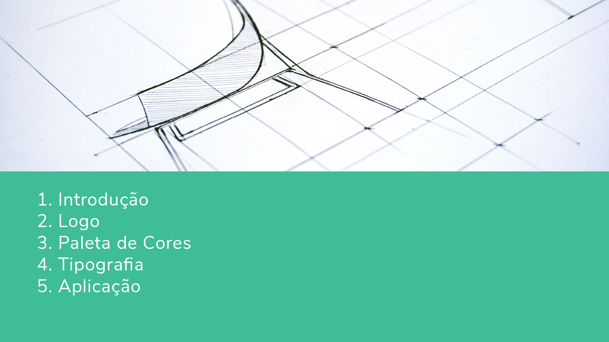
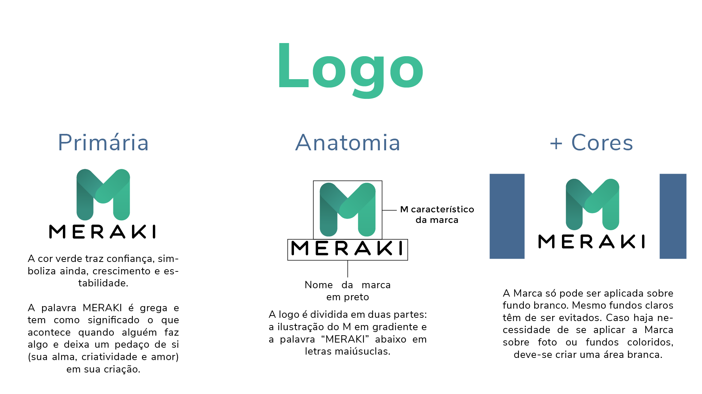
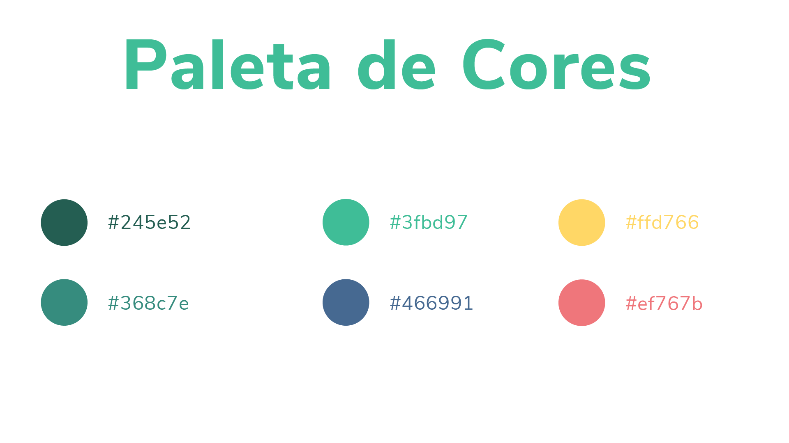
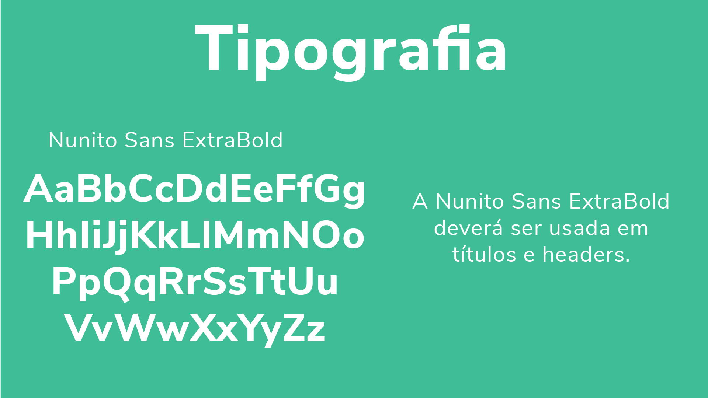
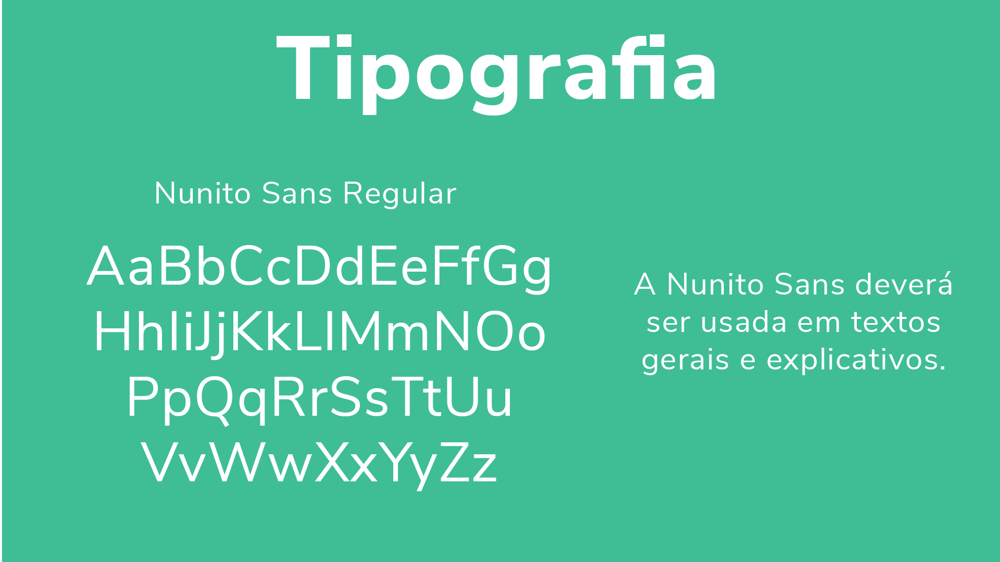
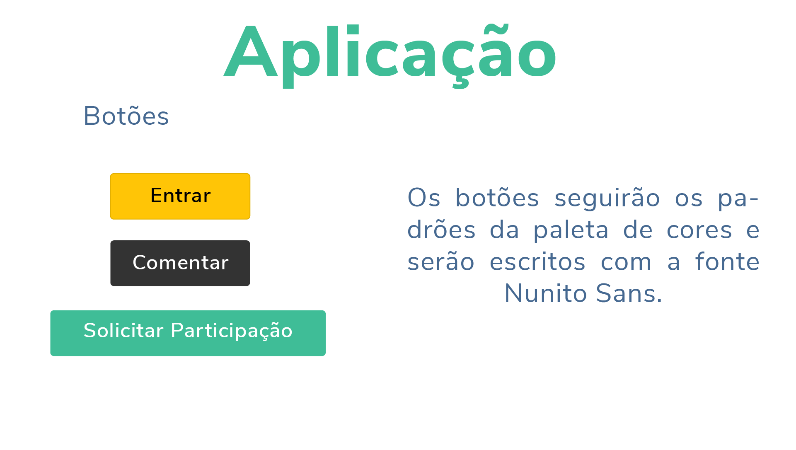
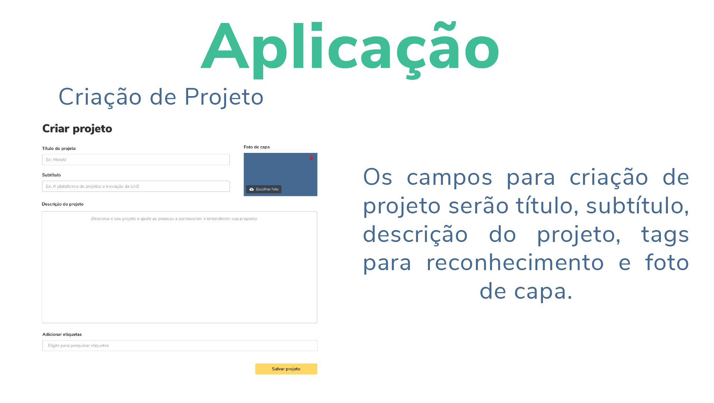
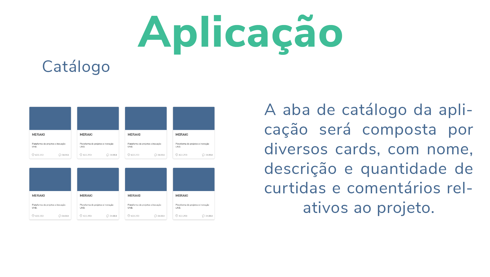

Guia de Estilo
O guia de estilo define a comunicação verbal e visual da aplicação. Ele deve ser desenvolvido levando em consideração qual mensagem e características se quer passar aos usuários.
Participantes
- Sofia Patrocínio
Versões
| Versão | Detalhes | Data |
|---|---|---|
| 1.0 | Primeira versão guia de estilo. | 10/09/2019 |
| 1.1 | Criação da nova logo. | 08/10/2019 |
| 1.2 | Criação da nova paleta de cores e tipografia. | 10/10/2019 |
| 1.3 | Criação da aplicação. | 11/10/2019 |
| 1.4 | Adição do guia de estilo. | 14/10/2019 |
| 1.5 | Adição do versionamento do guia. | 13/11/2019 |

A mudança do nome da aplicação tem como objetivo um nome fácil de lembrar e falar, mais curto, único e moderno. Com significado relevante para o contexto.


As cores da logo compreendem o verde, trazendo confiança e simbolizando crescimento, que acreditamos ser um dos objetivos da apliação. Projetos que tragam crescimento pessoal e profissional.
A paleta de cores abrange mais cores e mais vivas. As cores quentes traduzem ideias mais dinâmicas e agitadas, usada ade forma cuidadosa, na aplicação, pode levar mais interação com o usuário e engajamento.
Foram usadas fontes claras, legíveis e facéis de serem lidas.



Referências
CANVA. Canva, 2019. Disponível em: https://www.canva.com/learn/your-brand-needs-a-visual-style-guide/. Acesso em 14 de novembro de 2019.